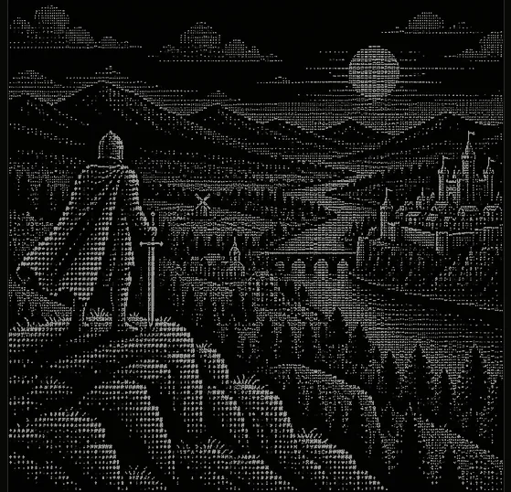
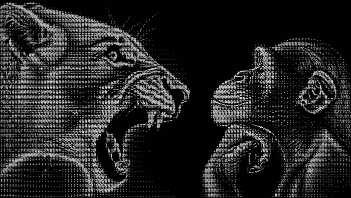
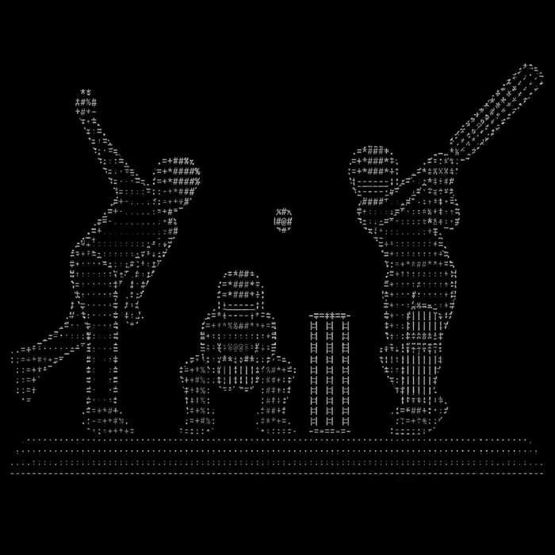
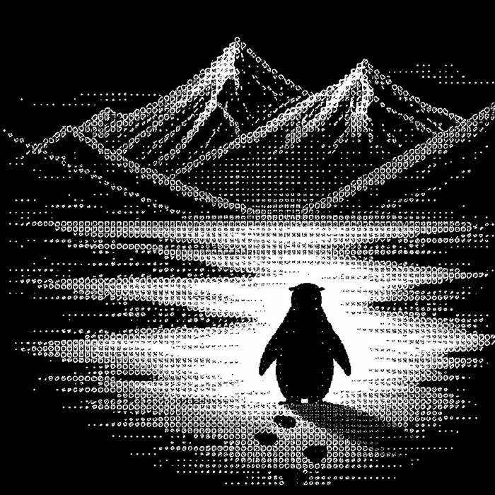
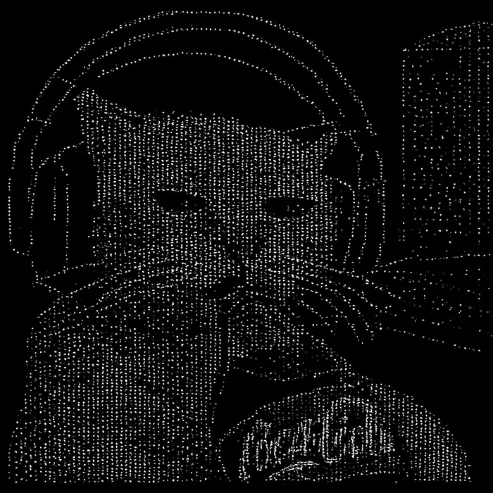
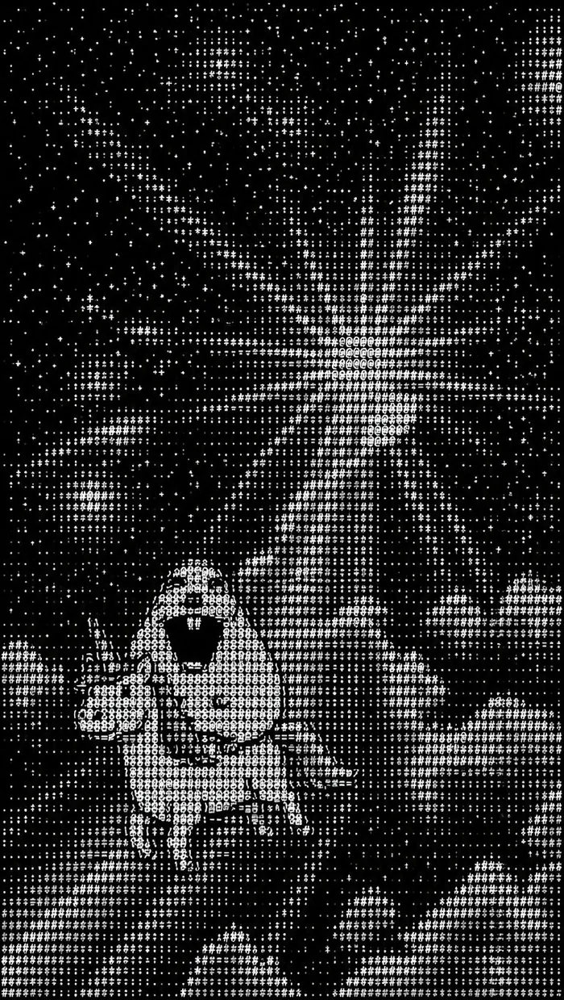
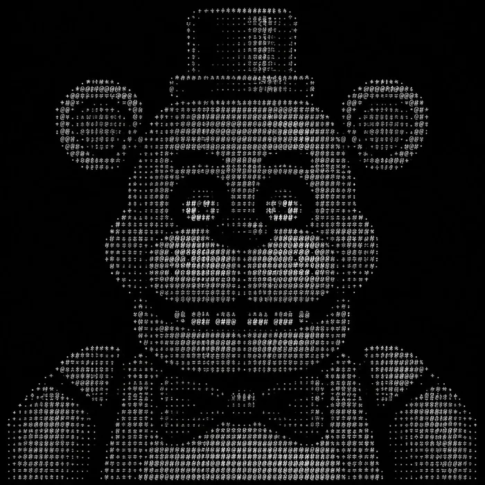

ojasv kushwah
cs student at srm ap, ai/ml track, graduating 2029. i build ml platforms and tools that make claims checkable.
python · c++ · c · go | llms · rag · mcp · ollama
work
four projects i actually stand behind.
unified ai platform
every ml demo i'd seen fell apart the moment real data showed up, so i built the thing i kept missing: one self-hosted platform for synthetic data generation, tabular automl, llm fine-tuning, vision and rag, all behind a single fastapi backend. adapters for autogluon, unsloth and ultralytics route the job, validate the gpu, keep runs reproducible. retrieval is faiss plus sentence-transformers; the vision engine is pytorch i wrote myself.
bolide (astrothon)
people film meteors, stations log detections, and almost none of it becomes science. bolide takes messy sightings from multiple ground stations and reconstructs the actual trajectory, so you can fly through where the rock came from. we won orion astrathon at iit mandi with it, and i still think about meteor physics more than i'd like to admit.
winner — orion astrathon, iit mandi
hemlock
a media verification system: digital signatures, tamper detection, provenance tracking, and analysis that flags which parts of an image were probably manipulated. deepfakes made "trust but verify" the only sane stance, so i built the verify part. it took second place at the foss hackathon.
second place — foss hackathon
zerovault
crypto exchanges keep asking you to trust their reserves. this is a proof-of-reserves dashboard that makes trust optional: zk-style verification, decentralized storage, blockchain anchoring and live market data, so solvency is something you watch rather than something you're told. it won the data haven track at hack srm 7.0.
winner — data haven track, hack srm 7.0
besides those: ecorewards turned waste into value and won geeksforgeeks myfirsthack, purrist judges your screen time (it's right), and this domain hosts twenty-plus algorithm visualizers i made while procrastinating productively.
tools, daily — python · c++ · c · go | fastapi · numpy · pandas · scikit-learn · git · linux · ollama | llms · rag · mcp · hugging face · local and cloud models | oop · ds/algo
elsewhere
the rest of the person.






contact
say hi, or check the receipts.